国・地域の見分け方
- 青いポストがある
- 速度制限の看板がSPEED LIMIT
- 逆▽の看板標識にYIELDと書いてあればアメリカ・書いてないならばカナダになる
- アメリカやカナダでは中央線として2本の黄色ラインが使われることが多い
- 家の前にゴミ箱が並んでいることが多い
- アメリカは制限速度がMPH表記のことがある
見つかる標識
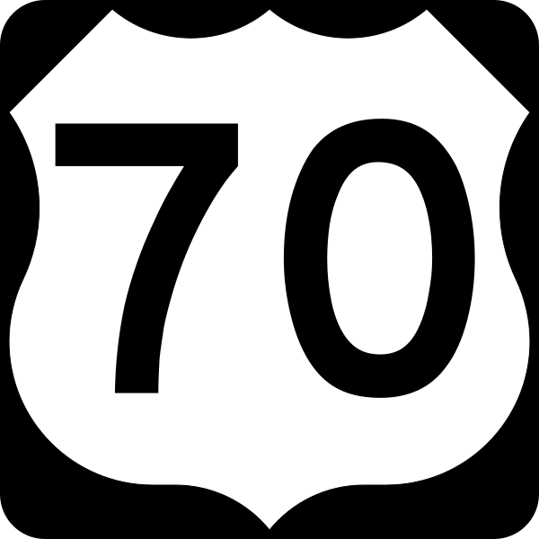
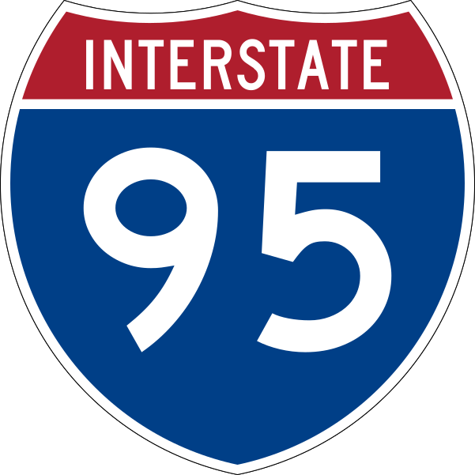
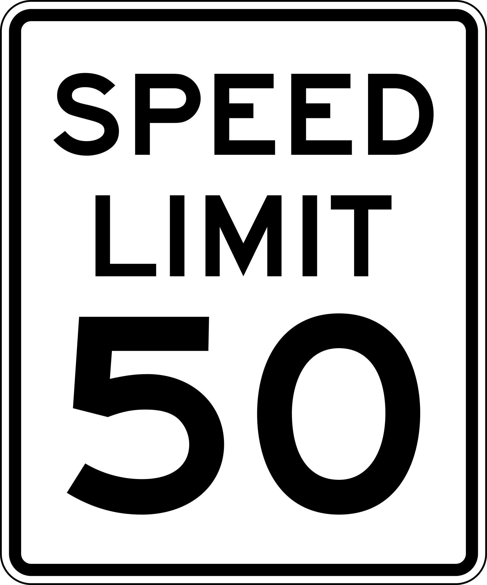
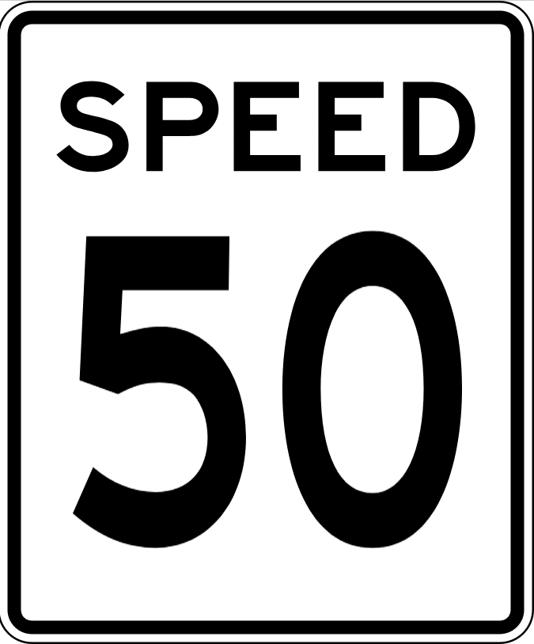
代表的な企業

速度制限の表記はSPEED LIMIT。ただしSPEEDしか書かれていないときはオレゴン州。カナダはMAXIMUM。
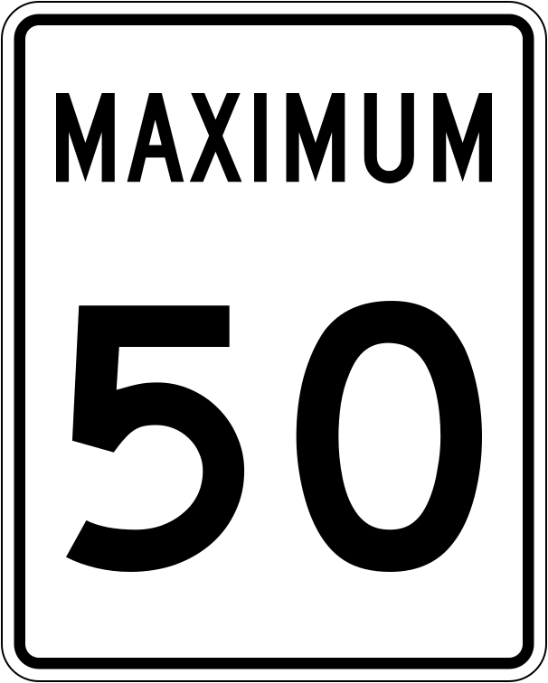
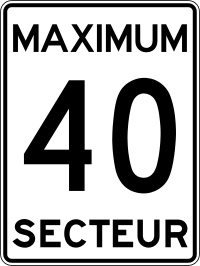
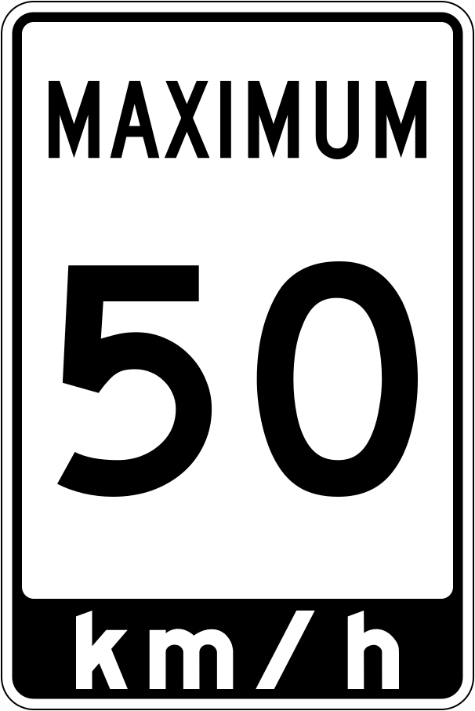
アメリカやカナダでは中央線として2本の黄色ラインが使われることが多い。
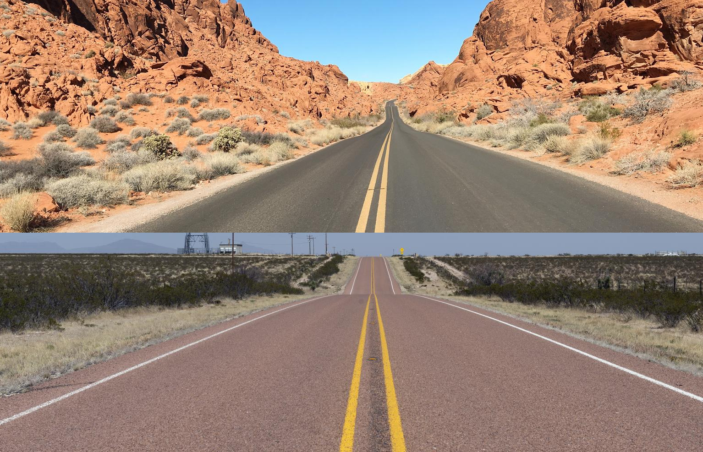
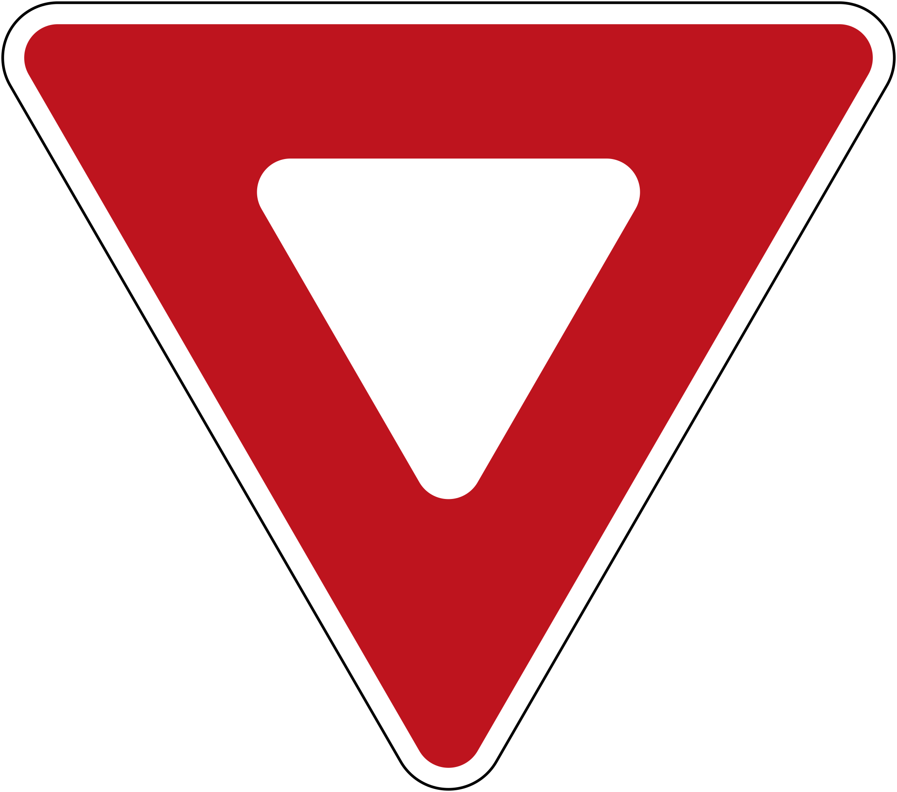
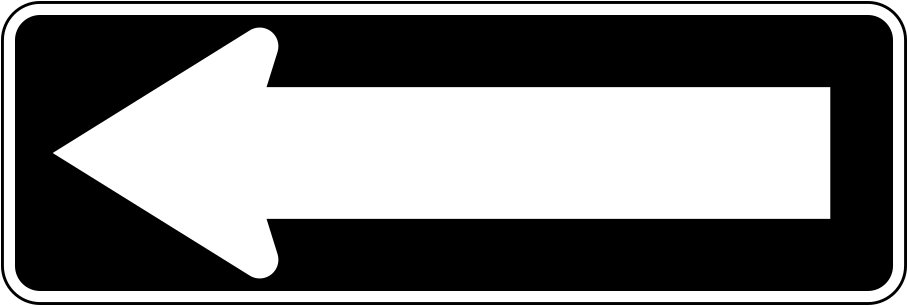
青いポスト。一方でカナダは赤い。郵便局である場合、建物の壁や看板に州と都市名が書いてあることが多いので確認してみる。
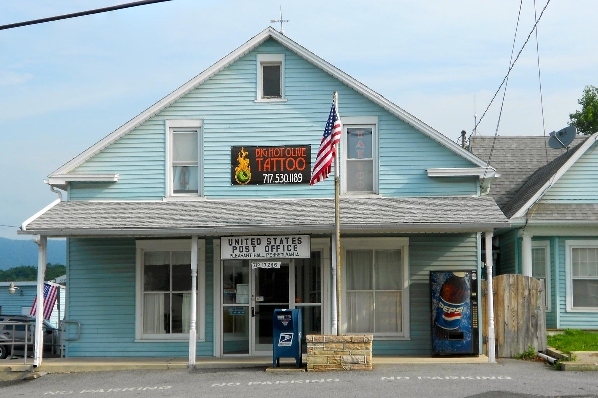
アメリカに本拠地を置く大きな企業がたくさんある。廃棄物収集・電力・水道局のような会社も上場していて、看板やロゴが街中にある。順番にWaste ManagementとRepublic Services（廃棄物収集業者でゴミ箱にロゴがある）・ChevronとCitgo(ガソリンスタンド)・Target（小売）など。
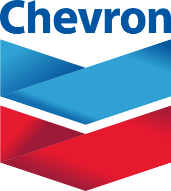
州間高速道路などの看板であり、数字が2桁以下のものは東西・南北である程度順番に並んでいるのがマップを見ると分かる。数字が5の倍数の道は他と比べると距離が長いことが多い。数字が3桁の道路（Three-digit Interstate）のものは派生元の道路番号に100の倍数を加算したもので場所によってはとても短い(参考文献 3-digit Interstate Highways Primer)ので、先に下2桁の道路番号を探してみるのも手。
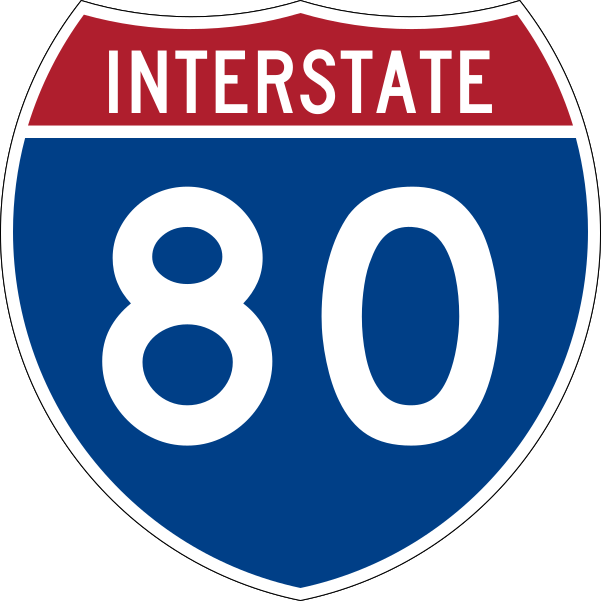
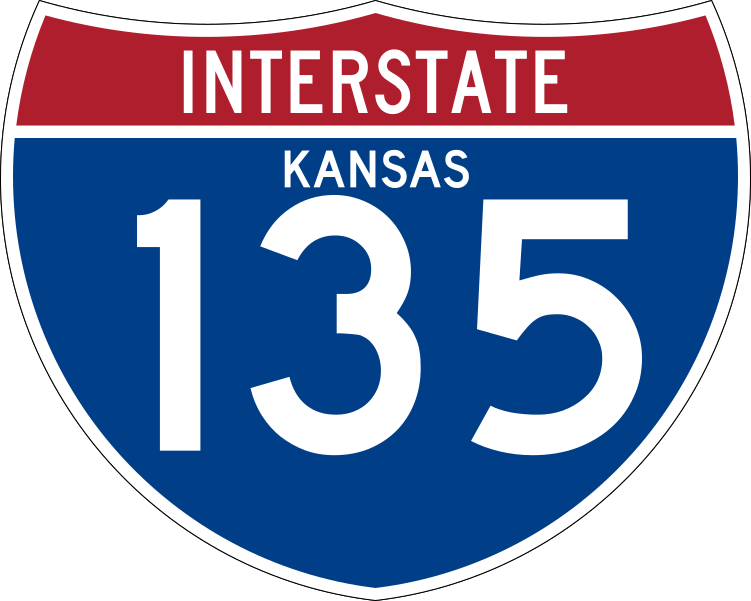
アメリカは制限速度がMPH表記(参考文献 マイル毎時)であり道端の看板もマイル表記。そして看板の裏がフラットなことが多い。左がアメリカ、右がメキシコ。
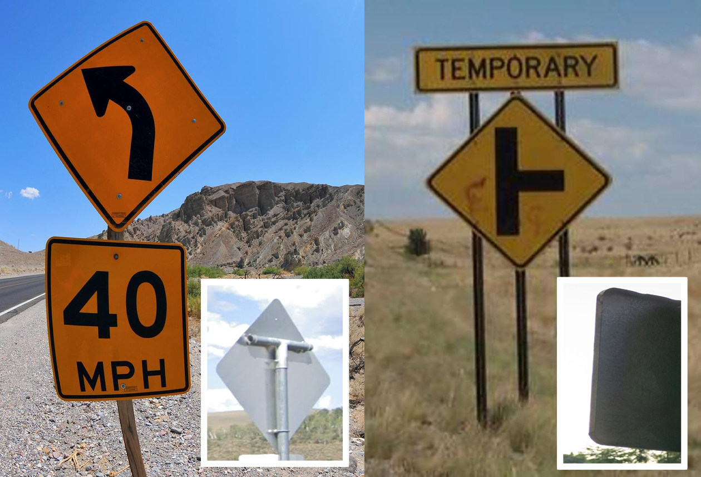
アメリカ関連グッズ
州・地域の絞り込み
アメリカが関係する離島
- アメリカ本土から離れた場所にアメリカ領の離島やアメリカが関係する場所が存在する
州限定の細かいヒント
州を絞り込むヒント
離島かどうかを判断した上で、ナンバープレート・州道の看板・山や植物の様子・土地が平坦かどうか・家の周りの雰囲気を見て場所を絞り込んでいく。地域がかなり絞り込めるヒントも州によっては存在する。
- ① ナンバープレートが前についているかどうか・ナンバープレートの色で州を絞り込める[資料](by rumilb )。前にあるかどうかだけはじめに覚える。
- アメリカのナンバープレート一覧（Wikipedia）
- newがつく州のプレートは黄色がち？(by niwaisound )
- 特徴的な色の州
- 全体的に黒→Delaware
- 全体的に緑→Vermont
- 全体的に濃いオレンジ→New York
- 全体的に黄色→アラスカ
- 全体的もしくは両サイドが薄い黄色→Mississippi
- 白背景で、右半分だけオレンジ→Utah
- 白背景で、真ん中に🍊が描かれている→Florida・Georgia
- 白背景で、真ん中に緑の🌲描かれている→Oregon
- 白背景で、上に赤いライン→Ohio
- 白背景で、上に水色のライン→Minnesota・Montana・Iowa
- 白背景で、上が青で下が黄色→Pennsylvania
- 白背景で、上が赤茶色で下が青色→Idaho
- 白背景で、上の真ん中あたりがわずかに赤く数字のエリアが紺色に見える→California
- 上半分がハッキリとした青色で、下半分が白→Connecticut、Illinoisも似た感じに見えるときがある
- 上半分が白色で、下半分がうっすらと青→Kentucky
- 上がうっすらと黄色・下がうっすらと青→ワシントン？
- 前が付いていて🌈が描かれている→ハワイ
- ② 州間高速道路と州道の看板を見つけたら位置を絞り込める
- 州道の看板で州が特定できることが多い。また一部の州では州の形がそのまま看板の形になっている。
- 州間高速道路（青色に赤い帽子を被った看板）は偶数番号の道路が東西に、奇数番号の道路は南北に伸びていて、北東ほど数字が大きくなる
- 高速道路の出口は"Exit 1"といった感じで番号が付いていてズームすると確認できる
- ③ハワイ諸島にもストリートビューがあり黒土や赤土が特徴的
まず、前にナンバープレートを付ける必要がないエリア（黄色のエリア）を覚えてからナンバープレートの色を覚える。光の当たり方や角度で少し違った色に見えることも多く何回も練習して慣れる必要がある。もちろん車は動くのでナンバーで100%州が当たるわけではない。

By Raccoonny - Own work, CC BY-SA 4.0, Wikimedia Commons
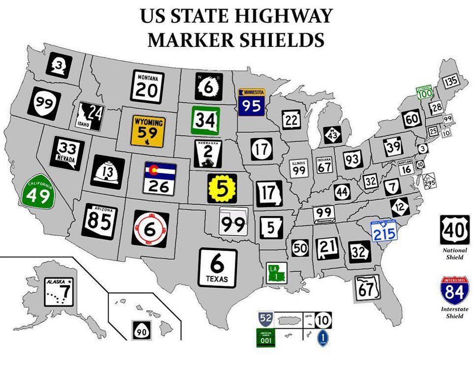
- アメリカ国道（United States numbered highways）
- 南北の高速道路は奇数であり、東から西に向かって番号が高くなる
- 東西の高速道路は偶数であり、北から南に向かって番号が高くなる
- 州間高速道路（Dwight David Eisenhower National System of Interstate and Defense Highways）
- 南北の高速道路は奇数であり、東から西に向かって番号が低くなる
- 東西の高速道路は偶数であり、北から南に向かって番号が低くなる
American Highways 101: Visual Guide to U.S. Road Sign Designs & Numbering Systems
地名が特徴的で、土の色も黒っぽかったり赤色に近い色が多い。
農業の分布
- コーンがあるなら中央よりも東側に行くのが無難
- 田んぼは電柱に黄色い線があるならカリフォルニア北部・無いならばミシシッピ川沿い
- データ提供元：U.S. Department of Agriculture
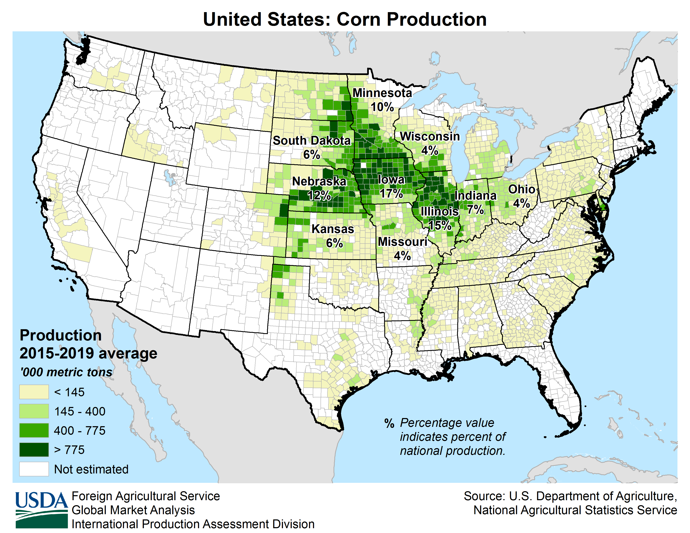
コーンベルトに沿ってコーンの生産が盛ん(参考文献 Corn: Production Acreage by County(USDA))。しかし全米で広く生産されているのでこれだけで中央部とは決まらない。
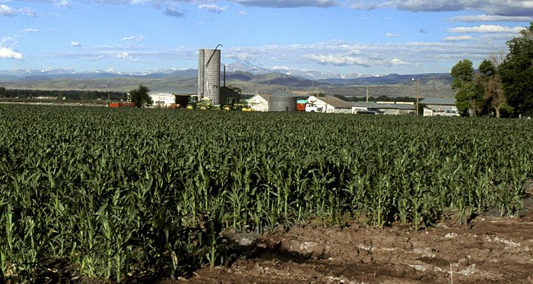
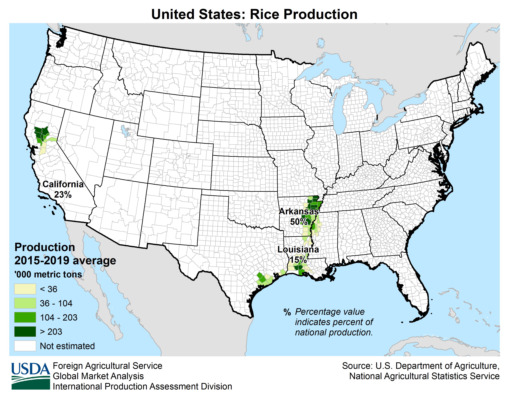
田んぼがあるのはカリフォルニアの特定の地域とアーカンソーの川沿い～沿岸部がほとんど(参考文献 Crop Production Maps(USDA))。カリフォルニアは電柱のヒントからわかるはず？
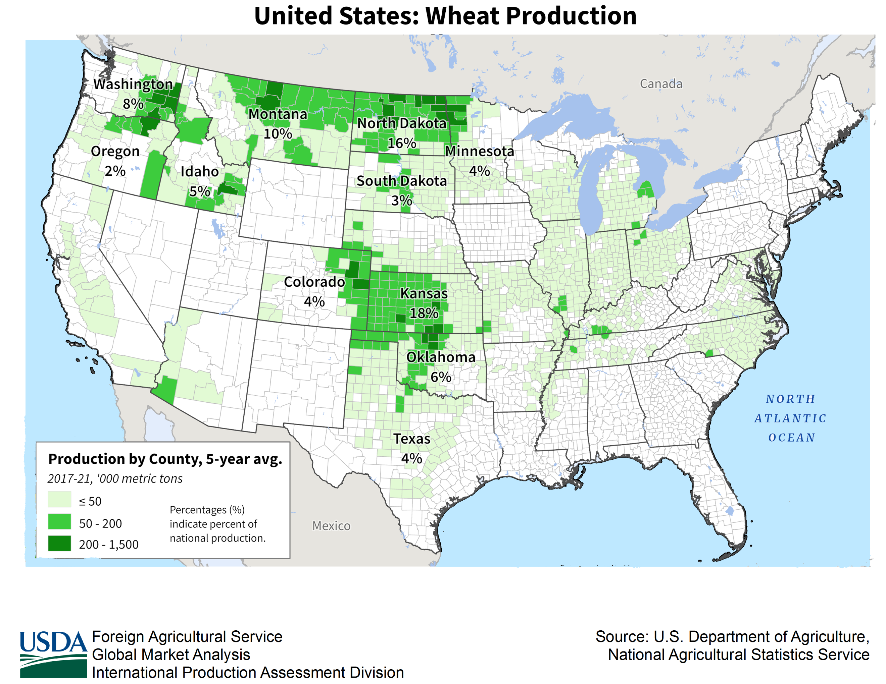
コーンや大豆と地域が重複していない。他のデータと地図が同じ形になるように縮尺や色を加工しています。
その他
- 迷路のような住宅街からスタートするときはSTOPの看板の裏側が見える道を避けると大き目の道路に出られるかも(参考文献 第一回GeoGuessrピンポイント学会_ダッシュ操作テクニック、アメリカの州道標識暗記法、CoopAOW25kSpeedrun)
- 具体例 南西以外はSTOP看板の裏面や「NO OUTLET」の看板が見える。南西に向かうと東にSTOP看板の表が見えるのでそちらに移動すると大きい道路に出ることができる。
- ガソリンスタンドの分布が会社ごとに違う(参考文献 10 Largest gas stations in the United States in 2023)
- Chevron→南の海沿いの州か西海岸の州
- Citgo→東側の州
- Phillips→内陸の州
- Murphy USA→東側の州
- Texaco→南の海沿いの州か西海岸の州
- 車の車検のシールで州がわかることがある
STOPは基本的に細い道から太い道に出る場合に立てられている。そのためSTOP看板の裏側が見える道に入ろうとする＝より細い道に入ろうとしている。STOP看板の表が見える＝より太い道に入ろうとしている。
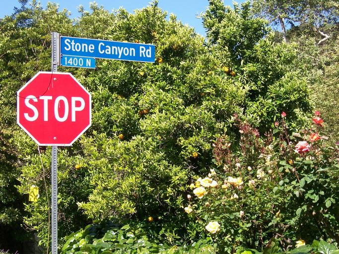
NO OUTLET(出口なし)やDEAD END(行き止まり)の看板がある道も入るべきではない。
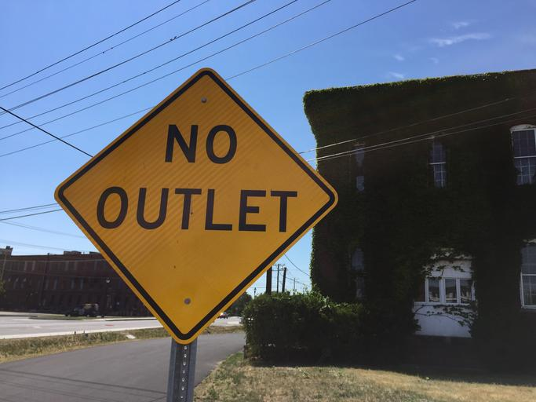
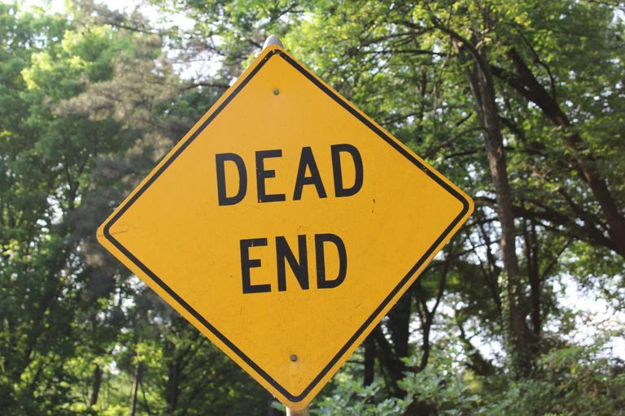
自作なので正しくないかも
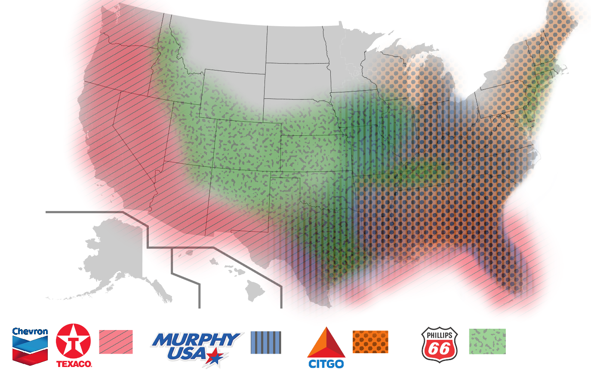
いくつかの州は車の車検のシールで判別できるかも
代表的な企業の説明
| 企業名 | コード | 説明 | 決算 | 配当履歴 |
|---|---|---|---|---|
| Waste management | NASDAQ | 米国、カナダ、プエルトリコに展開している廃棄物処理大手。Republic Services, Inc.とWaste Management, Inc.の２社でアメリカのおよそ半分のゴミを処理している。 | Dividend History | |
| NextEra Energy | NASDAQ | 再生可能エネルギー大手であり、風力と太陽光で世界最大の発電量。 | Dividend History | |
| Exxon Mobil | NASDAQ | 石油メジャー（国際石油資本）大手でありスーパーメジャーの一角(参考文献 国際石油資本)。 | Dividend History | |
| NVIDIA | NASDAQ | - | Dividend History | |
| Microsoft | NASDAQ | - | Dividend History | |
| S&P Global | NASDAQ | S&P 500、ダウ・ジョーンズ工業株30種平均は日本でもよく知られている。 | Dividend History | |
| FactSet Research Systems | NASDAQ | 金融情報データの提供や関連ソフトウェアを開発している。FactSet Insightなどで市場全体のレポートを出している。 | Dividend History |